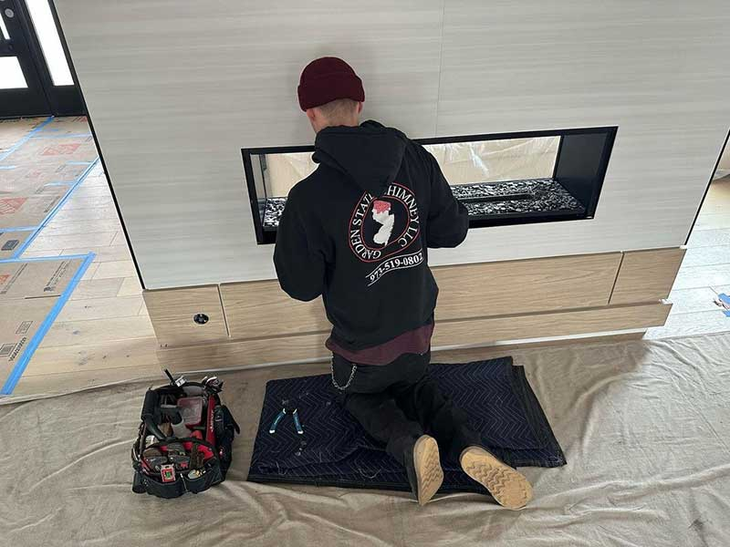

Few upgrades add comfort and ambiance like a gas fireplace — clean-burning, efficient, and ready at the flip of a switch. Whether you’re converting an old wood-burning firebox, adding an insert, or installing a brand-new unit, our NFI Master Hearth Specialists handle the gas connection, venting, and finish work safely and to code.
Serving Passaic, Bergen, Morris, and Essex Counties. Call 973-519-0802 or book online to get started.
Request an Appointment
Gas appliances involve fuel lines, venting, and ignition systems — all of which must be installed precisely. A poor installation risks gas leaks, carbon monoxide, and fire. As certified hearth professionals, we ensure your gas fireplace is installed correctly, vented properly, and tested before we leave.
We start with a consultation to choose the right unit, assess your space and gas supply, install and vent the appliance to code, and finish with a full safety check and a walkthrough so you’re comfortable operating your new fireplace.
Already have a gas fireplace? We also provide gas fireplace service and repair to keep it running safely.
Call us at 973-519-0802 or book your appointment online. We can’t wait to work with you.